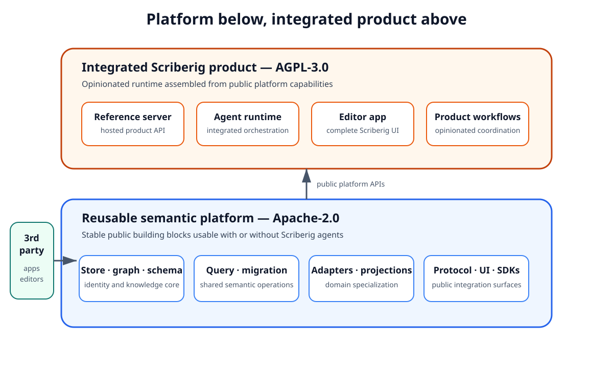
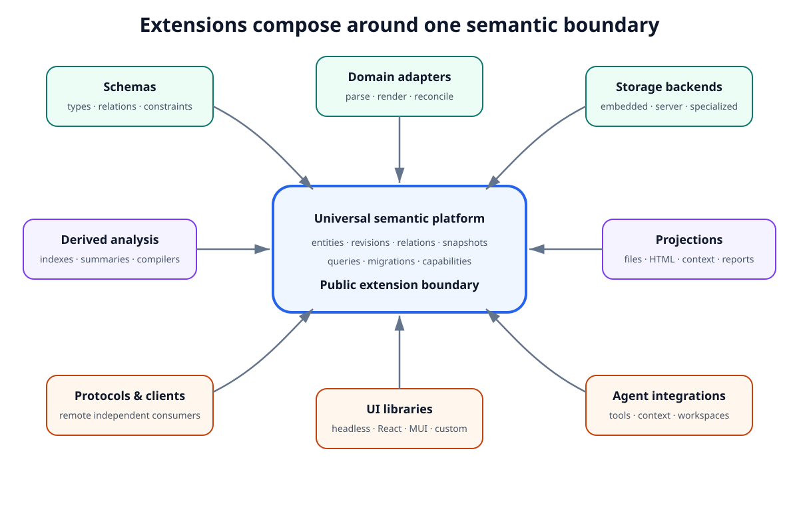
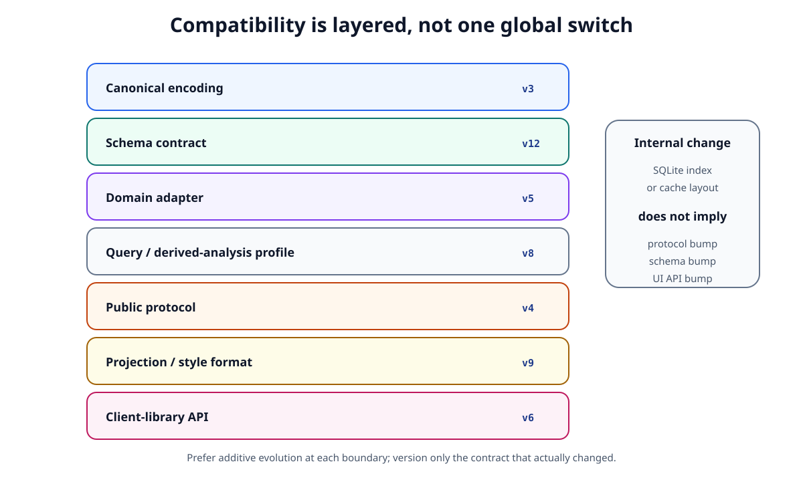
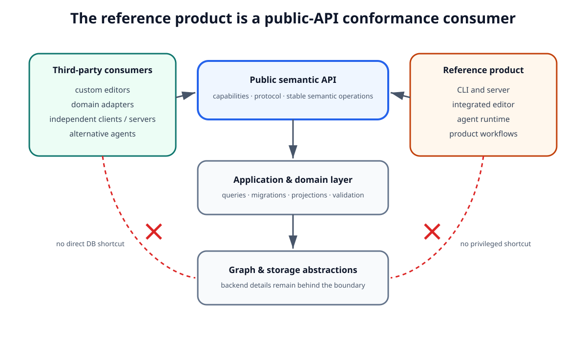
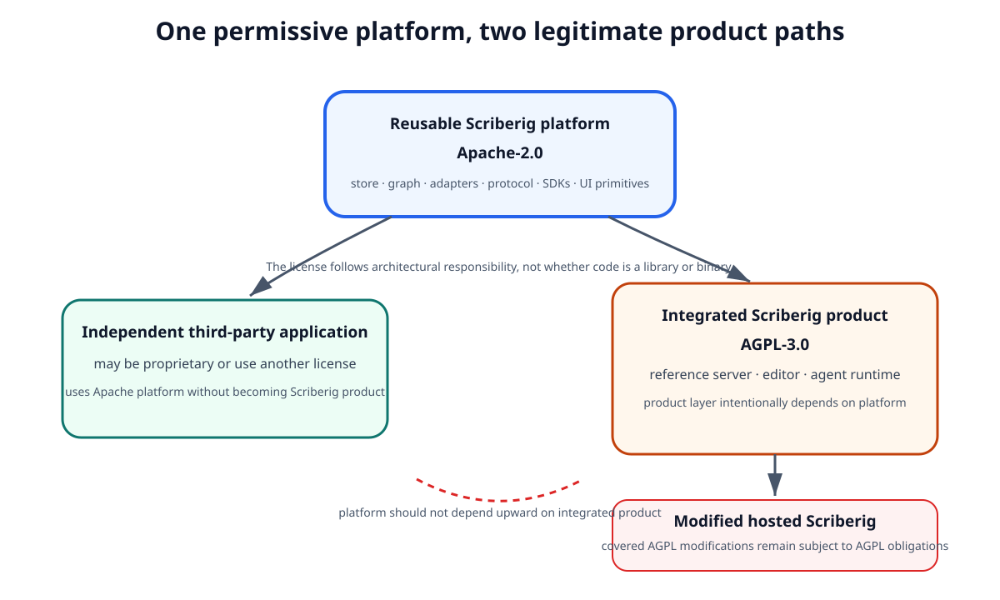

Extensibility, Ecosystem, and Licensing¶
1. Purpose¶
Scriberig is both a product and a reusable platform.
The universal knowledge store, query model, projection system, domain adapters, client libraries, and web libraries should be useful independently of the integrated Scriberig application and independently of the agent runtime.
The project should make it straightforward for third parties to:
- define new schemas and semantic domains;
- add parsers, renderers, validators, and reconciliation logic;
- provide alternative storage backends;
- add derived indexes and analysis;
- build clients in different languages;
- create custom user interfaces;
- build domain-specific editors;
- integrate Scriberig into existing applications;
- build alternative agent runtimes or omit agents entirely.
At the same time, the integrated Scriberig server, agent runtime, and editor should remain an open shared product rather than becoming a proprietary hosted fork whose improvements are never returned to users.
This document defines the architectural extension boundaries, ecosystem expectations, compatibility principles, and licensing split that support both goals.
The central rule is:
Reusable infrastructure should be easy to adopt. The integrated Scriberig product should remain open when modified and offered as a service.
2. Platform and Product Are Different Layers¶
Scriberig should not be designed as one indivisible application.
The architecture has two broad layers.
2.1 Reusable platform¶
The reusable platform includes capabilities such as:
- immutable storage;
- snapshots and revisions;
- the universal semantic graph;
- schemas;
- queries;
- migrations;
- projections;
- domain adapters;
- protocol definitions;
- client libraries;
- reusable web models and UI primitives;
- reusable agent-facing abstractions that do not require the integrated runtime.
These parts should be useful to applications that are not Scriberig.
A CAD application, documentation system, code-analysis service, research tool, IDE, knowledge browser, or proprietary internal system should be able to reuse the platform without adopting the full Scriberig product.
2.2 Integrated product¶
The integrated product combines the reusable platform into an opinionated end-user system.
It includes capabilities such as:
- the reference server;
- the complete Scriberig web editor;
- the integrated agent runtime and orchestration;
- opinionated workflows that coordinate sessions, tools, migrations, validation, and UI;
- product-specific operational behavior.
The integrated product should itself be built on the public platform interfaces.
It must not rely on private shortcuts that are unavailable to third-party applications.
This distinction is architectural before it is legal.
The licensing boundary follows the same separation.
Figure 1 shows the intended dependency and licensing direction. The reusable Apache-2.0 platform sits below the integrated AGPL-3.0 product, and third-party applications may stop at the platform layer. The important point is that the legal boundary follows an architectural boundary that already exists for reuse, dependency direction, and product composition.

Figure 1 — The licensing split follows the platform/product architecture: reusable building blocks stay permissive while the integrated product remains AGPL-covered.
3. Extensibility Is a Core Requirement¶
Extensibility is not a later plugin feature.
The universal knowledge model exists specifically so new domains can be added without replacing the storage and interaction architecture.
A new extension should specialize the shared system rather than fork it.
For example, adding a new programming language should not require a new persistence model.
Adding a new document format should not require a separate query engine.
Adding a new browser view should not require a separate server API.
Adding a new agent should not require unrestricted database access.
The project should preserve stable extension seams from the beginning even when the first implementation supports only a small number of domains.
4. Public Extension Categories¶
Scriberig should support several independent classes of extension.
4.1 Schemas¶
A schema defines domain meaning over the universal knowledge substrate.
Schemas may define:
- entity types;
- properties;
- relation types;
- collection semantics;
- constraints;
- validation rules;
- canonical versus derived fields;
- supported operations;
- supported projections;
- description strategies.
A third party should be able to define a domain without changing the universal store.
4.2 Domain adapters¶
A domain adapter connects an external representation or domain system to semantic knowledge.
An adapter may provide:
- parsing;
- canonicalization;
- import;
- rendering;
- reconciliation;
- validation;
- semantic operations;
- derived analysis;
- domain-specific queries;
- domain-specific UI metadata.
Examples include Markdown, Rust, PDF, TypeScript, notebooks, CAD data, or a proprietary business format.
Adapters should depend on public graph, schema, migration, query, and projection abstractions rather than internal storage details.
4.3 Storage backends¶
The logical storage model must not be permanently coupled to one physical backend.
The initial implementation may use one preferred backend, but the architecture should permit alternatives for:
- embedded use;
- testing;
- server deployments;
- distributed storage;
- specialized indexing;
- constrained environments.
A storage implementation must preserve the logical guarantees of revisions, snapshots, consistency, and identity.
Consumers above the storage boundary should not need to know which backend is used.
4.4 Queries and derived analysis¶
Extensions may add derived knowledge and specialized query capabilities.
Examples include:
- compiler analysis;
- reference indexes;
- call graphs;
- embeddings;
- PDF layout analysis;
- search indexes;
- domain-specific validation;
- summaries and descriptions.
Derived extensions must declare their provenance and dependencies so their results can be reused or invalidated correctly.
4.5 Projections¶
Extensions may define new external representations of knowledge.
A projection may be:
- a text file;
- a source file;
- HTML;
- a transcript;
- a model context;
- a UI representation;
- an interchange format;
- a generated report.
Editable projections may additionally provide parsing and reconciliation so external changes can become semantic migrations.
4.6 Clients and protocols¶
Third parties should be able to use Scriberig remotely without depending on internal Rust libraries.
The public protocol must therefore be treated as an extension surface.
Client libraries may exist for Rust, TypeScript, and other languages.
The protocol should expose semantic concepts rather than backend-specific details.
4.7 User-interface libraries¶
The web interface must be layered so third parties can choose how much opinion they adopt.
Reusable layers may include:
- protocol types;
- transport clients;
- client-side semantic models;
- framework bindings;
- headless editor and navigation controllers;
- neutral components;
- opinionated component libraries such as MUI-based components.
A third party should be able to use the behavior without using Scriberig's visual style.
4.8 Agent integrations¶
The integrated Scriberig agent runtime is one consumer of the platform.
Other agents should be able to consume the same semantic APIs.
Reusable agent abstractions may define:
- semantic tool descriptions;
- context providers;
- capability descriptions;
- operation events;
- workspace abstractions.
They should not require the integrated Scriberig orchestration runtime.
Figure 2 summarizes the extension model as a composition problem rather than a plugin ownership hierarchy. Schemas, adapters, storage backends, derived analysis, projections, protocol clients, UI libraries, and agent integrations all meet at the same public semantic boundary. A new extension enriches or implements one capability without becoming the exclusive owner of the entities it touches.

Figure 2 — Independent extension categories compose around the universal semantic platform instead of forking the architecture.
5. Extensions Must Use Public Semantic Boundaries¶
Extensions should not depend directly on database tables, private serialization details, undocumented internal identifiers, or application-specific state.
The preferred dependency direction is:
Not:
or:
This rule allows the persistence implementation, cache layout, server framework, and internal indexing strategy to evolve independently.
The public semantic model is the compatibility boundary.
6. Extension Capabilities Should Be Discoverable¶
A consumer should be able to discover what an entity, domain, or server supports.
For example, inspecting an entity may reveal:
entity type: Function
relations:
body
parameters
calls
references
operations:
inspect
diff
rename
validate
render
A different domain may expose:
This allows clients and agents to adapt to installed capabilities rather than requiring every possible domain to be hard-coded into the universal interface.
Capability discovery also allows simpler clients to ignore functionality they do not understand.
7. Extensions Should Compose¶
The extension model should favor composition over exclusive ownership.
A domain entity may participate in several independent extension systems at the same time.
For example, a function may have:
- a Rust syntax adapter;
- compiler-derived type information;
- a call-graph index;
- model-generated descriptions;
- a source projection;
- a custom UI inspector;
- organization-specific annotations.
These extensions should attach knowledge through typed relations, derived objects, projections, and public operations instead of forcing all behavior into one monolithic adapter.
This is important for the universal knowledge premise.
The same entity may be interpreted and enriched by several independent producers.
8. Canonical and Derived Extensions Must Stay Distinct¶
An extension may contribute canonical knowledge, derived knowledge, or both.
The distinction must remain explicit.
A parser importing an editable source file may contribute canonical syntax.
A compiler may contribute derived type information.
A model may contribute a generated description.
A user may contribute an authoritative annotation.
These must not become indistinguishable merely because they are stored in the same database.
Every extension that produces derived knowledge should identify:
- its producer;
- its profile or version;
- its exact dependencies;
- its provenance;
- whether its output is authoritative, imported, validated, inferred, or generated.
The extension mechanism must preserve the trust model of the knowledge store.
9. Compatibility Is Defined at Several Layers¶
Scriberig should not use one global version number as the only compatibility mechanism.
Different contracts evolve at different rates.
Important compatibility layers include:
- object and canonical encoding versions;
- schema versions;
- domain adapter versions;
- protocol versions;
- projection formats;
- style/profile versions;
- query language versions;
- derived-analysis profile versions;
- client-library APIs.
Compatibility should be explicit at the boundary where it matters.
For example, changing an internal SQLite index should not require a protocol version change.
Changing canonical encoding rules may require migration support but should not automatically require a new UI API.
Changing a model-generated summary profile should not redefine the canonical entity schema.
10. Evolution Must Prefer Additive Change¶
Public extension contracts should prefer additive evolution.
Where practical:
- add new fields rather than reinterpret old fields;
- add new relation types rather than silently changing existing semantics;
- add new operations rather than changing unrelated operation behavior;
- preserve unknown fields or capabilities when forwarding data where the protocol permits it;
- allow clients to ignore unsupported optional capabilities;
- version incompatible canonical formats explicitly.
This is especially important because the ecosystem may contain clients and extensions that do not upgrade at the same time as the reference product.
The integrated editor must not assume that every server or adapter was compiled from the same commit.
Figure 3 makes the compatibility rule concrete. Canonical encoding, schemas, adapters, query profiles, protocol, projection formats, and client APIs are separate contracts that can evolve at different rates. An internal storage-index change should therefore leave all of those public versions untouched unless their actual contract changes.

Figure 3 — Version the compatibility boundary that changed; do not use one global version number as a proxy for unrelated contracts.
11. Extensions Must Not Circumvent Migrations¶
A public extension that changes canonical knowledge must use the normal change model.
It must not update storage behind the graph, migration, validation, or snapshot systems.
All canonical write paths should converge conceptually on:
This rule applies equally to:
- built-in adapters;
- third-party adapters;
- web editors;
- CLI extensions;
- agents;
- external API clients;
- importers.
An extension may provide specialized semantic operations, but those operations must ultimately produce ordinary semantic changes visible to the same history and validation system.
12. Extensions Must Respect Capabilities and Trust Boundaries¶
Being installed does not imply unrestricted authority.
Extensions should operate under explicit capabilities where practical.
Capabilities may constrain:
- which entities can be read;
- which relations can be followed;
- which domains can be modified;
- which external resources can be accessed;
- whether canonical migrations may be proposed;
- whether migrations may be promoted;
- which validations may be invoked;
- which tools may be exposed to agents.
A third-party parser, renderer, UI component, or agent integration should not receive broad database or filesystem access merely because it participates in the system.
The extensibility model must remain compatible with the trust and validation model defined elsewhere.
13. The Reference Product Is a Conformance Consumer¶
The full Scriberig application should be built from the same public abstractions available to other applications.
This includes the web editor.
The reference editor should consume public protocol, client, model, navigation, and component libraries rather than use hidden server endpoints or direct database access.
The same principle applies to CLI and agent surfaces where appropriate.
This gives the reference product a second role:
It is a conformance test for the public platform.
If the integrated product requires a private capability that third parties cannot access, the preferred response is to improve the public platform boundary rather than keep the shortcut private.
Figure 4 shows why this is a strong architectural test. Third-party consumers and Scriberig's own CLI, server, editor, and agent runtime enter through the same public semantic surface. Neither side should jump directly to database details; if the reference product needs such a shortcut, the public abstraction is incomplete.

Figure 4 — The reference product validates the public platform by consuming the same semantic APIs that third parties receive.
14. Third-Party User Interfaces Are Expected¶
Scriberig should explicitly support applications that do not look like the reference editor.
A third party may want:
- a minimal code-review interface;
- a document editor;
- a project-specific dashboard;
- a CAD-oriented semantic browser;
- a read-only knowledge explorer;
- a mobile application;
- an IDE integration;
- a custom design system.
Reusable web behavior should therefore be separated from visual opinion.
Headless navigation, selection, commands, history, diff, and editing behavior should be usable without MUI.
Opinionated component libraries may be provided on top.
The reference MUI implementation is a convenience and product choice, not the required rendering architecture.
15. Third-Party Domains Are Expected¶
The project should assume that important future domains will be implemented outside the main repository.
The core must therefore avoid assumptions such as:
- every entity belongs to a built-in type;
- every projection is textual;
- every validator is known at compile time;
- every relation is understood by the reference UI;
- every query result can be rendered by a built-in component;
- every domain has source files;
- every extension uses an agent.
Unknown domain objects must remain inspectable at the universal graph level even when no specialized UI is installed.
The raw graph browser in the reference editor is therefore not only a debugging tool. It is also a compatibility fallback for unknown extensions.
16. The Ecosystem Should Have a Small Stable Core¶
The most durable extension contracts should be the smallest ones.
The universal concepts should change more slowly than domain adapters and product UI.
A healthy dependency direction is conceptually:
identity and storage
-> graph and schemas
-> queries and migrations
-> domains and projections
-> application operations
-> server, CLI, UI, agents
Higher layers may evolve quickly.
Lower layers should remain intentionally conservative.
This makes it possible for experimental domains and products to evolve without destabilizing storage or semantic identity.
17. Licensing Goals¶
The licensing model should support four goals simultaneously.
17.1 Encourage adoption of the reusable platform¶
Organizations should be able to embed the storage, graph, query, protocol, client, projection, domain, and UI libraries in commercial or proprietary software without being required to open the rest of their application.
17.2 Encourage an ecosystem around shared primitives¶
Third parties should be able to build alternative editors, domain systems, services, and integrations on top of Scriberig without requesting a special license.
17.3 Keep the integrated Scriberig product open¶
A company should not be able to take the complete Scriberig server or editor, make substantial private modifications, offer the modified product as a network service, and avoid making those covered modifications available under the same open-source terms.
17.4 Keep the boundary understandable¶
The repository may contain more than one license, but a developer should be able to determine the license of a component from its architectural role and package metadata.
The licensing split should follow package boundaries rather than individual implementation details whenever practical.
18. Reusable Infrastructure Uses Apache-2.0¶
Reusable platform libraries should use the Apache License 2.0.
This includes, by default, libraries whose primary purpose is reusable infrastructure rather than the integrated Scriberig product.
Examples include:
- identity and core types;
- immutable storage abstractions and implementations;
- the universal graph;
- schemas;
- query libraries;
- migration libraries;
- projection libraries;
- domain adapters;
- protocol definitions;
- Rust and TypeScript clients;
- client-side semantic models;
- framework bindings;
- headless editor libraries;
- reusable neutral UI components;
- opinionated reusable UI libraries such as MUI-based components;
- reusable agent-facing interfaces that do not implement the integrated runtime.
Apache-2.0 is intentionally permissive.
Consumers may combine these components with closed-source applications.
This supports the goal that the universal knowledge platform become useful infrastructure beyond Scriberig itself.
Apache-2.0 is preferred over a minimal permissive license because it also provides explicit patent terms for contributors and users.
19. The Integrated Product Uses AGPL-3.0¶
The integrated Scriberig product should use the GNU Affero General Public License version 3.
This includes, by default, components whose primary purpose is operating the complete Scriberig product rather than serving as a reusable primitive.
Examples include:
- the reference Scriberig server application;
- the integrated agent runtime and orchestration layer;
- the complete Scriberig editor application;
- product-specific workflows that combine platform capabilities into the hosted or locally operated Scriberig product.
The AGPL boundary is intended to preserve openness for modified network-accessible versions of the integrated product.
A user or company remains free to build a different proprietary application from the Apache-licensed platform libraries.
The distinction is intentional:
The project should avoid moving generally reusable functionality into AGPL components merely to make the licensing boundary more restrictive.
If a capability is broadly useful as infrastructure, it belongs in the reusable Apache-licensed layer.
20. Agent Functionality May Be Split Across the Boundary¶
Agent functionality is not automatically part of the AGPL layer.
Reusable agent abstractions may remain Apache-2.0 when they define general concepts such as:
- tool interfaces;
- semantic context providers;
- operation event types;
- capability descriptions;
- workspace interfaces;
- model-independent agent protocol structures.
The integrated agent execution and orchestration system may be AGPL-3.0.
This follows the same platform/product distinction used elsewhere.
The knowledge store must remain fully usable without any AGPL agent runtime.
21. CLI and Client Tools Should Remain Reusable Where Practical¶
A command-line client that primarily exposes public platform or server capabilities should normally remain Apache-2.0.
Likewise, client SDKs and protocol tools should remain Apache-2.0.
Product-specific executables that embed substantial integrated AGPL runtime behavior may themselves belong on the AGPL side.
The decision should follow architectural responsibility rather than executable format.
A binary is not automatically part of the product layer merely because it is a binary.
22. Package Boundaries Must Make Licensing Clear¶
Mixed licensing is acceptable only if the boundaries are easy to understand.
Each distributable package or crate should declare its own license.
Repository-level documentation should explain the split.
Where appropriate, source files may use SPDX identifiers.
The repository should retain complete license texts for the licenses it uses.
A package should not silently contain code under incompatible expectations from another architectural layer.
Dependencies from AGPL product components to Apache platform components are expected.
The reverse dependency should generally not exist for architectural reasons independent of licensing.
23. Third-Party Dependencies Keep Their Own Licenses¶
Scriberig's license does not replace the licenses of its dependencies.
The project must preserve notices and attribution required by third-party libraries, assets, generated code, fonts, parsers, UI frameworks, and other dependencies.
An Apache-licensed Scriberig package may depend on permissively licensed third-party software under its own terms.
An AGPL Scriberig application may likewise include dependencies under compatible licenses.
Dependency license review should be part of adding a new externally distributed component.
24. Extensions Do Not Become Scriberig Merely by Using the Platform¶
A third-party extension or application using Apache-licensed platform components is not required to adopt Scriberig's AGPL product license merely because it interoperates with Scriberig.
Examples include:
- a proprietary application using the knowledge store;
- a custom editor using the TypeScript client;
- an internal service using a domain adapter;
- a proprietary UI built from headless Scriberig editor primitives.
The AGPL applies to the covered AGPL components and modifications or combinations governed by that license, not to every application that uses the permissively licensed platform independently.
The architectural separation should make that distinction practical as well as legal.
Figure 5 captures the practical consequence of the split. An independent application can build on the Apache-2.0 platform under its own license, while the integrated Scriberig server, editor, and agent runtime remain AGPL-3.0. If that integrated product is modified and offered as a hosted service, the covered AGPL modifications remain subject to the obligations of that license; the platform itself does not become AGPL merely because the product depends on it.

Figure 5 — Apache-licensed building blocks can support independent products, while the integrated Scriberig product remains AGPL-covered.
25. Protocol Interoperability Must Not Require the Reference Product¶
The protocol should be usable by independent implementations.
A third party should be able to build:
- another client;
- another UI;
- another server implementation;
- a test harness;
- an automation service;
- an embedded integration.
without importing the reference product runtime.
Protocol specifications, schemas, and test fixtures should therefore live with the reusable platform rather than only inside AGPL application code.
This is important both for ecosystem health and for keeping the server from becoming the accidental architecture boundary.
26. Conformance Is More Important Than Central Registration¶
The ecosystem should not initially require every extension to be registered with a central Scriberig service.
An extension should be able to work locally if it satisfies the relevant public interfaces and compatibility contracts.
The project may later provide registries, package indexes, signatures, trust metadata, or curated catalogs, but these should be ecosystem conveniences rather than prerequisites for the extension architecture.
A local or private domain extension must remain possible.
27. Reference Implementations Should Not Become Mandatory Implementations¶
Scriberig may provide preferred implementations for:
- storage;
- Markdown;
- Rust;
- web components;
- reconciliation;
- rendering;
- query execution;
- agent orchestration.
These are reference or production implementations, not definitions of the architecture itself.
Where a public abstraction exists, another implementation should be possible without pretending to be the reference implementation internally.
This rule is particularly important for storage backends, parsers, renderers, clients, and UI systems.
28. Lower-Level Designs May Choose Concrete Packaging¶
This document defines architectural and licensing responsibilities, not final package names.
Lower-level designs may split or combine implementation packages as experience requires.
For example, a reusable agent layer may later be separated from an integrated runtime, or a domain adapter may be split into parser, renderer, and analysis packages.
Any such packaging should preserve the rules in this document:
- reusable primitives remain independently usable;
- lower layers do not depend on the integrated product;
- extensions use public semantic boundaries;
- the public protocol remains independent of one server implementation;
- canonical writes use the shared migration model;
- licensing follows the reusable-platform versus integrated-product boundary.
29. Contribution Policy Must Preserve the Licensing Model¶
Contributions should be accepted under terms compatible with the license of the component being modified.
Apache-licensed platform contributions should remain reusable under Apache-2.0.
AGPL product contributions should remain available under AGPL-3.0.
If the project later intends to offer a separate commercial license for AGPL-covered components, contributor terms must be designed deliberately before that becomes a requirement.
The project should not assume it can relicense third-party contributions later without having obtained the necessary rights.
Commercial dual licensing is therefore a possible future product decision, not an implicit property of the initial open-source model.
30. Ecosystem Health Principles¶
The following principles should guide future extension and packaging decisions.
- The universal store must be useful without agents.
- Domain adapters must be useful without the integrated product.
- The full product must use public platform interfaces.
- Extensions must not depend on private database representation.
- Canonical writes must use migrations and snapshots.
- Unknown domains must remain inspectable through universal graph tools.
- Reusable UI behavior must be separable from visual style.
- The protocol must support independent clients and implementations.
- Public contracts should evolve additively where possible.
- Derived extension data must preserve provenance and dependency information.
- Capabilities and permissions apply to extensions as well as agents.
- Reusable infrastructure should default to Apache-2.0.
- The integrated server, editor, and agent runtime should default to AGPL-3.0.
- Licensing boundaries should follow architectural package boundaries.
- A proprietary application may build on the Apache platform without becoming the Scriberig product.
31. Definition of Success¶
The extensibility model is successful when the following are simultaneously true.
A developer can use only the storage and graph libraries without installing an agent runtime.
Another developer can add a new semantic domain without changing the universal database architecture.
A third party can build a proprietary application using the reusable Apache-licensed libraries.
A UI developer can use Scriberig behavior with a custom design system instead of the reference MUI components.
An unknown extension can still be explored through generic graph browsing and query tools.
The full Scriberig editor can be built entirely from the same public APIs and libraries available to external developers.
A modified hosted version of the integrated AGPL Scriberig product remains subject to the open-source obligations of that license.
These outcomes are not separate goals.
Together they define the intended ecosystem:
A permissively reusable semantic knowledge platform underneath an integrated open product, with stable public extension points connecting the two.